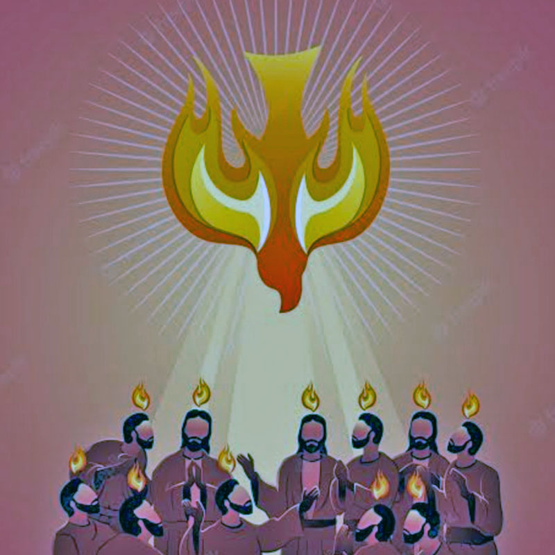

Kanisa: Maana hali ya Kanisa tofauti na mafundisho ya dini yanavyotafsiri.
KANISA.
Neno Kanisa, limekua neno kubwa na maarufu sana miongoni mwa watu. Pamoja na umaarufu wake, halijaishia kuwa neno pekee, bali limeenda mbali zaidi na kuwa dhana ya maisha ya ya watu, imefika hatua limetoka katika maana yake halisi na kupewa maana ya Eneo maalum kwa ajili ya watu (wakristo) wanapokutana kwa ajili ya kufanya ibada kwa Mungu wao.

Lakini haikuishia hapo tu limeendelea zaidi na kutafsiriwa kama Jengo maalum, lenye sanaa mbalimbali za kufikirika, linaloonesha ishara/alama mbalimbali ikiwemo alama ya msalaba kuashiria ndilo kanisa.
Pamoja na tafsiri hizo mbalimbali zilizopo katika vichwa vya wanadamu wengi, kuna kundi ambalo ni kubwa kiasi, linajua kwamba, Kanisa linalozungumzwa katika Kitabu cha Biblia, sio jengo au eneo maalum kwa ajili ya watu kufanyia ibada. bali ni Mwili wa Kristo Yesu. lakini kwa bahati mbaya, ni kwamba wenye dhana potofu ya Kanisa kuwa Eneo au jengo. wapo wengi kiasi kwamba wamewafunika wachache wanaoujua ukweli.
Katika makala hii tutachambua kidogo juu ya mambo kadhaa yanayolihusu Kanisa, kwa mujibu wa maandiko ya Biblia na vilevile tutatumia mifano kadhaa ambayo inaweza kuleta wepesi wa mtu kuelewa maana halisi iliyokuwa imekusudiwa na Yesu Kristo.
Mwanzo wa jina Kanisa.
Katika Injili ya Mathayo 16:13 – 20. Kwa mara ya kwanza tunasoma na kusikia neno Kanisa katika historia ya Biblia.
Kitabu hiki cha injili ni kitabu cha kwanza katika vitabu vya agano Jipya, (Japo hakikuwa kitabu cha kwanza kuandikwa). Hivyo Kristo mwenyewe kupitia Kitabu hicho, ndiye aliyetufunulia habari ya Kanisa, ambayo hakuna aliyekuwa akiijua kabla ya Ufunuo huo. Yesu Kristo alitoa ufafanuzi wa Kanisa. anaanza kwa kusema, “wewe ndiwe Petro, na juu ya mwamba huo nitalijenga Kanisa langu, wala milango ya kuzimu haitalishinda,” katiika maneno haya tunapata mambo makuu matatu
- Mjenzi wa Kanisa ni Yesu Kristo pekee.
- Kanisa ni mali Yesu Kristo pekee.
- Kanisa halitashindwa na Milango ya kuzimu.
Kanisa mali ya Yesu Kristo.
Kufuatia kauli ya Yesu Kristo, tunaweza kuona namna ambayo isivyowezekana kanisa kuwa eneo au jengo maalumu kama tulivyozoea kuona, kauli hiyo ya Yesu, inatoa sifa moja tu kwa Kanisa, kwamba, Yeye ndiye atakaelijenga. Kwa maana nyepesi ni kwamba Yesu Kristo hakujenga kanisa alipokuwa na wanafunzi wake, bali ilikuwa moja ya ahadi alizozitoa kwa wanafunzi kwamba “Atalijenga” Kanisa lake. Hivyo ilibaki kuwa tarajio la wakati ujao.
Kwa maelezo hayo machache ni dhahiri kwamba hakuna kazi ya Mwanadamu inayopaswa kuchukua utukufu wa YESU KRISTO. Kufanya kazi za mikono na fikra zetu, ikiwemo kujenga majengo yaliyopewa majina mbalimbali na Binadamu na kuyaita KANISA. Ni laana inayoendelea kuharibu kizazi hadi kizazi
Je, kama Yesu aliahidi kulijenga Kanisa, analijenga vipi naye hafanyi kazi ya namna ya kibinadamu?.
Kanisa Yesu analolizungumzia ni Mtu (Hali ya kumbadili mwanadamu kuwa Kiumbe kipya), huo ndio ujenzi wa Kanisa la Kristo Yesu, Kwa njia ya kifo na kufufuka kwake, sisi sote tunasamehewa dhambi zetu kwa kumuamini Yeye, kisha tunapokea ahadi ya Roho Mtakatifu, ambaye ni msaidizi, mwalimu na kiongozi wetu hapa ulimwenguni hadi Yesu atakaporudi kwa ajili ya kulichukua Kanisa lake.
Ahadi ya Kanisa ilikuwa ahadi ya kwanza kabla ya kufa kwake, na Ahadi ya Roho Mtakatifu ni ahadi ya kwanza baada ya kufufuka kwake, Ahadi hizi zote watu huzitofautisha, na haswa huzitofautisha kwa moja kuifanya Jengo la kibinadamu na nyingine kuifanya elimu.
Mwanadamu anapopata Neema ya Yesu Kristo ya kusikia Neno lake na kumuamini anapitia mambo mawili kwa hatua tofauti.
Anasamehewa dhambi kwa njia ya Toba, (Kupitia kifo chake)
Anapata karama ya kuzaliwa mara ya pili kwa kujazwa Roho Mtakatifu. (kupitia kufufuka kwake)
Toba sio maungamo ya dhambi kwa kanuni za sala tunazozijua, bali ni majuto ya ndani ya moyo na kiu ya kutokutaka kurudia kufanya makosa na kuziacha njia za kwanza za dhambi, kisha kumgeukia Mungu.
Hivyo kanisa la Kristo ni mwanadamu anapopewa uweza wa kimungu wa kuishinda dhambi ambayo kwayo ilitupasa kwenda mautini, Lakini sasa tunaepushwa na mauti kwa Neema ya ukombozi, ndilo Kanisa litakalokuja kunyakuliwa siku ya ufufuo wa pili.
Hivyo kuyafanya majengo yetu tuliyonayo kuchukua utukufu wa Kanisa, ni kushusha utukufu wa Yesu Kristo na kumpa mwanadamu, kadhalika kunamfanya mwanadamu kuwa dhaifu kuliko majengo yasiyo na uhai wala uweza wowote wa Kimungu.
Rejea: Matendo ya Mitume 14:27, Matendo ya Mitume 16:5, Matendo ya Mitume 2:47, Matendo ya Mitume 8:1 – 3, Matendo ya Mitume 9:31, 1Wakorintho 14:23, Wakolosai 4:15.
Tumeona kwamba kanisa ni Mwanadamu aliyeiamini Injili (Yesu Kristo) kisha akasamehewa dhambi kwa njia ya Toba, (kwa Neema ya upatanisho wa Yesu Kristo kwa kupitia kifo chake), kisha akazaliwa mara ya pili kwa njia ya Roho Mtakatifu (kupitia kufufuka kwake).
Imani + Toba + Roho Mtakatifu = KANISA (Mwili wa Yesu Kristo).
Umoja wa Roho.
Baada ya Mtu kuzaliwa kwa Roho wa Kristo Yesu, anaunganiswa kuwa Roho moja na Yesu Kristo na Yesu Krsto ni roho moja na Mungu Baba (Jehova), na Roho Mtakatifu yu pamoja na Baba na Mwana, hivyo tunapozaliwa Rohoni tunakuwa Roho moja na Mungu, Yesu Kristo na Roho Mtakatifu.
Katika umoja huu hakuna tena wawili bali Mmoja tu yaani Mungu. Hivyo tunapokusanyika pamoja wale tuliyo okolewa, tunahesabiwa kuwa mmoja mbele za Mungu kwa sababu Roho zetu zimekuwa Moja katika Kristo Yesu.
Mfano wa mwili ulivyo mmoja, ndivyo nasi tunakuwa wamoja, yaani Yesu Kristo ambaye ni Kichwa na Kanisa ni Mwili. hivyo huwezi kumtenga Kristo Yesu na Kanisa, au Kanisa kujitenga na Kristo Yesu kwa sababu kwa pamoja wanautengeneza mwili mmoja.
Je, Kichwa kinaweza kuishi bila Mkono au bila Mguu ama bila Macho ama bila Kinywa? ni kweli mwili unaweza kuishi bila viungo hivyo. lakini mwili hauwezi kuishi bila Kichwa. Ndivyo kanisa lilivyo tegemezi kwa Yesu Kristo, yaani Kanisa haliwezi kuwepo bila YESU KRISTO. kwa sababu litakuwa limekufa. kichwa kikiondolewa, mwili hauwezi kuishi tena, ndivyo nguvu ya Yesu Kristo ilivyo kwanye Kanisa.
Yesu Mkombozi wa Kanisa.
Yeye asemaye “nimeokoka” na ajipime fikra na kauli yake, kwa sababu ni makufuru mbele ya Mungu. shetani hupitia mambo madogo madogo kutufarakanisha na Mungu. Hivyo inatupasa kuwa waangalifu wa mambo madogo madogo, yasije yakatuangusha na kututengenezea wigo wa kumuona Mungu katika maisha yetu.Watu hatuokoki bali tunaokolewa kwa Neema ya Yesu Kristo.
Rejea Efeso 2: 1 – 10, Warumi11: 1 – 6, Warumi 3: 24, Tito 3: 3 – 10, Efeso 2: 1 – 10, Warumi11: 1 – 6, Warumi 3: 24, Tito 3: 3 – 10
- HATUOKOKI BALI TUNAOKOLEWA KWA NEEMA
- *HATUJENGI KANISA BALI YESU NDIYE HULIJENGA KANISA
- HATUPASWI KUTUBISHWA BALI TUNAPASWA KUTUBU MAKOSA YETU KWA MUNGU
- HATUFUNDISHWI IMANI BALI TUNAKIRIMIWA KIPAWA CHA IMANI NA MUNGU (Luka 22)
- KANISA SIO JENGO BALI NI MWILI WA KRISTO.
Makutano ya Kanisa.
Imeandikwa kwamba, “Msiache kukusanyika kama ilivyo desturi ya Makanisa yote ya watakatifu.”
Kupitia andiko hili tunaona kwamba ni jambo jema mbele ya Mungu kukusanyika, kwa lengo la kuhudumiana kwa vipawa vya Roho Mtakatifu, lakini pia tunalazimika kukutana kwa taratibu njema na zinazompa Mungu utukufu. Kwa sababu ni desturi njema yenye kibali machoni kwa Mungu. Hivyo basi tunapokutanika, tafsiri yake ni kwamba kanisa linaungana na kuwa ushirika wa Roho wa Mungu. Tunatumika kwa nguvu ya kila mmoja wetu katika ushirika wa Roho, kusudi Kristo apate kuujenga mwili wake katika uweza na utukufu wa Mungu Baba..
Rejea: Waefeso 5:27, 1timotheo 3:15, efeso 5:17, Wakolosai 1:18.
Utaratibu Usiofaa wakati wa Makutano.
Zipo taratibu nyingi zinazoendelea kuchagizwa katika makutano mbalimbali, taratibu ambazo ukizipima kwa mujibu wa maandiko, zipo kinyume kabisa na maagizo ya Yesu Kristo. Katika sehemu hii tutaangazia maeneo machache yanayoweza kuwa kama mfano wa upotofu wa taratibu hizo.
Katika kipengele hiki tutaangazia namna makusanyiko ya leo yanavyoenda kinyume na maelekezo ya waasisi wetu katika imani kwa Kristo Yesu.
Sala.
Katika sala za wengi kwenye makutano, ni maombi yeny kumwelezea Mungu mambo yanayomuhusu mwanadamu, tofauti kabisa na maagizo yanayotutaka tuutafute kwanza ufalme wa Mungu, kisha mengine tutazidishiwa, pia imeandikwa katika maandiko kwamba Tumuombe Mngu kwa jina la Yesu Kristo, naye atatutendea kwa kadiri ya mahitaji yetu.
Je, nitamuombaje Mungu kwa usahihi?. swali hilo hautakuwa wa kwanza kujiuliza, kwa maana hata wakati Yesu akiwa na wanafunzi wake walimuuliza wakisema “Mwalimu, Tufundishe kusali”. Yesu akawajibu akawaambia Msalipo salini hivi.
Mathayo 6:9 – 21. Jina maarufu inaitwa {SALA YA BWANA}, sala hii ukiisoma na kuitafakari, huna budi kubadilisha utaratibu wa kusali kwako.
“Baba yetu, Uliye mbinguni, Jina lako litukuzwe, Ufalme wako uje, Mapenzi yako yatimizwe hapa duniani kama mbinguni, Utupe riziki yetu ya kila siku, Utusamehe makosa yetu kama nasi tunavyowasamehe watukoseao, Usitutie majaribuni bali utuokoe maovuni, kwa kuwa ufalme, nguvu na mamlaka ni vyako amen.
“Baba yetu Uliye mbinguni, Jina lako litukuzwe.” maana yake ni kwamba, jambo la kwanza katika lolote utakaloliomba ni lazima liwe jambo linaloonesha utukufu wa Mungu, wala sio utukufu/hadhi/heshima zetu wenyewe, au Mamlaka yeyote ya kibinadamu.
“Ufalme wako uje.” jambo la pili katika maombi yetu, ni lazima kile tunachokiomba kiwe kinaruhusu mamlaka ya Mungu, katika jambo hilo tunaloliomba.
“Mapenzi yako yatimizwe hapa duniani kama mbinguni.” maana yake ni kwamba, hitaji lolote tulilonalo, lisiwe kikwazo cha matakwa ya Mungu juu ya maisha yetu hapa duniani. yaani hitaji lako lisije kujenga uadui na hitaji la MUNGU. kama vile malaika mbinguni wanavyoyatenda mapenzi ya Mungu, basi nasi imetupasa kuyaweka kwanza mapenzi ya Mungu mbele kisha yetu baadae.
“Utupe riziki yetu ya kila siku.” sehemu hii kuna tafsiri mbili muhimu kuzifahamu, ya kwanza ni kwamba kipengele hiki cha sala kinagusa habari ya riziki kama mapato ya utafutaji wa hapa duniani, ni vyema na tunapaswa kumuomba Mungu katika utafutaji wetu wa mahitaji ya mwili. ili kwamba tunapojaaliwa kupata, basi tujue kwamba ni kwa baraka za Mungu na sio uwezo wako binafsi.
Tafsiri ya pili ya kipenge hicho.
Ni kweli kwamba Mungu anatubariki kwa mahitaji ya mwili kila siku, ila Kwasababu sala imetumika neno ufalme wako uje, hivyo haiwezekani ufalme wa Mungu uje, alafu usiwe na vitu vya ufalme huo, yaani chakula chenye utukufu wa kimungu, ambacho ndicho chakula cha ufalme huo. hivyo chakula chetu cha kawaida cha kidunia hakiwezi kutumika katika ufalme wa Mungu, kwasababu ni chenye kuharibika. Ila kipo chakula kisichohabirika kabisa kwa ajili ya ufalme huo usioharibika, na chakula hicho tunakijua kupitia kitabu cha….
Yohana 4:34 andiko linasema “chakula changu ndicho hiki, niyatende mapenzi ya baba yangu na nikaimalize kazi”.
Tutambue kwamba hatuwezi kufananisha ufalme wa Mungu na mambo ya duniani, hivyo yote yaliyozungumziwa katika sala hiyo ni mambo yenye utukufu wa Mungu. na zaidia ya yote, Biblia inaandika UFALME WA MUNGU SI KATIKA KULA WALA KUNYWA. Hivyo chakula kilichoozungumziwa hapo ni kile tulichokiona katika kitabu cha Yohana.
“Utusamehe makosa yetu kama nasi tunavyowasamehe watukoseao.” hii inamaana imetupasa tunapokuwa tunaomba basi tusiwe na neno na mtu yeyote bali tuwe wasafi wa mioyo na fikra zetu, tusiwe na mawaa, wala visasi, wala hila, wala ghadhabu, wala manung’uniko. kwasababu imeandikwa “kama umeleta sadaka kwa Bwana nawe ukakumbuka kuwa una neno na ndugu yako basi, iweke pembeni nenda kapatane naye kwanza ndipo uje uitoe hiyo sadaka”, na katika maombi pia imetupasa kumuendea Bwana Mungu tukiwa wasafi wa mioyo.
“Usitutie majaribuni bali utuokoe maovuni.” katika kipengele hiki tunaona maombi yetu yanapaswa kuomba msaada wa Mungu pindi ifikapo siku na saa ya kujiliwa kwa ajili ya majaribu. ili Bwana Mungu atusaidie ili tuweze kushinda hila za yule muovu. hapa ndugu zangu lazima tujue kwamba ipo siku na saa ya kujiliwa kwa ajili ya kujaribiwa hivyo yatupasa kuwa tayari kwa ajili ya siku na saa hiyo maana hatuijui. hivyo yatupasa tuzivae silaha zote za Mungu.
“kwa kuwa ufalme, nguvu na mamlaka ni vyako amen.” Na mwisho lazima maombi yetu yaoneshe kutambua mamlaka na uweza wa Mungu katika maisha yetu, na kwamba hatutendei tunavyotaka sisi bali anavyotaka yeye mwenyewe.
Ndugu zangu katika mtiririko huo wa sala ya Bwana Yesu aliyotuachia liko wapi jambo hata moja la hisia na fikra za mwanadamu?
hivyo ni kusema msingi wa maombi yetu umekuwa kikwazo mbele ya Mungu, kwa maana maombi yetu yamejaa matakwa yetu na matarajio yetu wala siyo matakwa ya Mungu. kinyume kabisa na taratibu, hivyo nikumbushe tena kwamba, tutajikuta tukikufuru Mungu, huhu tukiwa tunadhani kwamba tunamuomba. maombi hayo katika mtiririko hapo juu yanaweza kutumika kama muongozo wa maombi yetu yeyote tuliyonayo kwa Mungu.
Hivyo maombi yetu yeyote tuliyonayo yamepaswa kuakisi katika mtindo ambao unaonesha mamlaka ya Mungu na matakwa yake, naye atatusikia na kutujibu kwa wakati wake.
Meza ya Bwana.
Luka 22:14 – 20. Katika mstari tunaona chanzo haswa kinachotumiwa au kuonesha kwamba ni halali kwa matutano kula mkate na divai kama (meza ya bwana), lakini ukisoma kwa makini utagundua jambo muhimu sana, kwamba chakula kile kilikuwa cha mwili na kilikuwa ni desturi ya Wayahudi kushiriki aina hiyo ya chakula. Lakini Yesu mwenyewe anasema “Sitakula tena mzao wa Mzabibu hata nitakapokula ule mpya utakapokuja ufalme wa Baba yangu” Mungu wetu.
je, kama Yesu hakutumia chakula cha mwilini kututakasa kabla ya kufa, kwa nini sisi tuendelee kutumia chakula kile cha mfano kana kwamba ni vitu vyenye uwezo wa kutubadili maisha yetu ya dhambi kuwa ya utakatifu?
Je,inawezekanaje vitu vya mwilini vitusafishe Roho zetu?
je, Yesu anaposema chakula ni kwa tumbo na tumbo ni kwa chakula, leo tunawezaje kula mwilini tukatakaswa Rohoni?
Kama ni kweli mkate na divai ile ya mfano vilikuwa na uwezo wa kumpa mtu utakatifu, kwa nini Yesu alikufa kifo halisi ili atuokoe?
Yesu mwenyewe anasema ufalme wa Mungu si katika kula wala kunywa, je tunapokula mkate na kunywa divai ni kwa ajili ya utukufu wa nani?
Kama Yesu Kristo alijitoa sadaka kwa ajili ya wenye dhambi, je ni kwanini Makanisani tunaambiwa ili tushiriki meza ya Bwana sharti tuwe tumeungama dhambi, ndipo tushiriki?, Kwani Damu na Mwili wa Yesu msalabani ulitolewa kwa ajili ya wenye dhambi au watakatifu.? kama ni kwa ajili ya wenye dhambi mbona makanisani wanashiriki walio safi, wakati Yesu aliwataka wenye dhambi?**
Kwa maswali hayo machache unaweza kuona kwamba kuna mtego Mkubwa na wenye hila ya muovu Ibilisi, na ameupenyeza katikati ya watu kwenye makutano na kuleta ibada za sanamu makanisani. Kwa kusudi la kuwafanya watu waelendelee kumwabudu yeye pasipo wao kujua, kwa maana Ibilisi anajua kati ya jambo kubwa linalompa Mungu utukufu ni Ibada ya kweli. Hivyo ameleta Mitego ambayo wengi hatujaigundua na imetunasa tumeanza kumwabudu shetani katika makusanyiko mengi ulimwenguni kote. Tukitaka kukielewa chakula cha Bwana basi imetupasa tule katika meza yake na kwenye Ufalme wake kama anavyoahidi wanafunzi wake katika. Luka 22 :28 – 30.
Meza ya bwana inayotolewa katika Makutano ya Mkate na Divai ni batili. Ufalme wake ni ufalme wa Roho. Hivyo hatuna budi kula chakula cha Roho kama Meza ya bwana. Daudi anasema kwenye zaburi ya 23, “Waandaa menza mbele yangu, machoni pa watesi wangu.” Tunaona kwamba Meza ya bwana mara zote anaandaliwa machoni pa watesi, kama Yesu alivyoshiriki meza yake mbele ya watesi wake (yaani hao waliomtesa na kumsulubisha). Kadhalika nasi pia imetupasa kushiriki mateso yake kwa ajili ya Utukufu wa Mungu.
Na katika kitabu cha Yohana 4:34 kinasema “chakula changu ndicho hiki niyatende mapenzi ya baba yangu na nikaimalize kazi.” Vivyo hivyo nasi imetupasa kudumu katika Kristo Yesu hadi pale atakapomaliza kazi yake ya Ukombozi katika miili yetu.
Rejea: Waefeso 5:5 –17
- MEZA YA YESU HAPA DUNIANI NI KUKUBALI KUPITIA MATESO INAPOBIDI (KWA MAPENZI YAKE)KWA AJILI YA UTUKUFU WA MUNGU
- CHAKULA CHA BWANA YESU HAPA DUNIANI NI KUYATENDA MAPENZI YA MUNGU NA KUFUATA WITO ALIOKUITIA UKAMTUMIKIE
je. ni kweli meza tunayoshiki katika makusanyiko inaandaliwa mbele ya watesi? au
je, maisha ya utakatifu tunayaonesha katika makusanyiko, au kwa watu wasiojua kuhusu upendo na neema ya Yesu Kristo?. Ambao hao ndio watesi wa watakatifu.
Mikesha.
Kwa kawaida mikesha mingi katika makutano sio jambo geni japo swali kubwa la msingi linaweza kuwa…
Je, mikesha hiyo ni kwa ajili ya kutiza andiko au kwa ajili ya maongozi ya Roho Mtakatifu ameamuru ifanyike?. Kama ni kwa maongozi ya Roho basi hakuna mjadala wa kuyakosoa, ila kama ni kwa sababu imeandikwa “kesheni mkiomba kwa maana hamjui wakati wala saa atakayokuja mwana wa Adam.” Basi tatizo ni kubwa sana, kwa maana hata ratiba zetu za mikesha zinaonesha jinsi gani tulivyolitafsiri neno hilo kimakosa. kwanini tuwe na siku maalum ya kukesha kama hatujui saa?, kwanini tusikeshe kila siku.?
Tafsiri sahihi ni kwamba, imetupaswa kuwa tayari wakati wote kwa maana imetupasa kumcha Mungu kila saa kila wakati, na sio kwa kipindi ama siku au masaa maalumu, kwani wakati ule tunaodhania kwamba wakati bado basi anaweza kuja na akatukuta hatuko tayari, hivyo muda na saa na wakati wote ni wa Mungu, hakuna muda maalum kwa ajili ya Mungu na muda kwa ajili ya mambo yako. kama ni kazini basi ufanye kwa kumtukuza Mungu, kama ni nyumbani vivyo hivyo na kama ni katika maradhi basi hatuna budi kumtukuza Mungu hata ijapo mauti ya kifo cha mwili bado imetupasa kumtukuza MUNGU.
Madhabahu
Katika majengo ya makanisa niliyoyazungumzia hapo awali, ni kawaida kukuta mahala fulani mbele ya jengo hilo, pameandaliwa na pamewekwa tofauti kabisa na eneo lingine ambapo makutano wanakaa. Hiyo ni kutokana na umuhimu wa eneo hilo katika tafsiri yetu ya kibinadamu, eneo hilo hupambwa kwa vitambaa na rangi mbalimbali, nyingine zikiwa zinabeba maana fulani na nyingine ikiwa ni kuleta muonekano mzuri wenye kupendeza machoni. Sio ajabu kwa nyakati hizi unaweza ukaona jengo ambalo halijakwisha vizuri ujenzi ila ukiingia ndani ya jengo hilo liitwalo Kanisa, ukakuta pamepambwa tofauti na uhalisia wa jengo.
Ukweli ni kwamba ni eneo linaloheshimika zaidi katika jengo lote la kanisa, wengine wakipita mbele yake huina na kutoa ishara ya heshima,na wengine husujudu kama kuashiria utakatifu wa eneo hilo,na wengine hawawezi hata kuthubutu kupakanyaga kwa miguu yao wenyewe kwa hofu ya utakatifu wa eneo hilo.
Kwanza tutafute Neno madhabahu limeanzia wapi na ilikuwa kwa ajili ya nini,na lilibeba maana gani nyuma yake. Mwanzo 8: 20, Mwanzo 12:7. Tunaona madhabahu ilikuwa ni eneo la kumtolea Bwana Mungu sadaka ya Kuteketeza,ikiwa ni wanyama au mazao,na vilikuwa vinateketezwa vingali hai.hivyo ndivyo madhabahu ilivyokua inajengwa na kufanya kazi ya kumtolea Bwana Mungu sadaka za kuteketezwa.
- Je,ni kweli panaweza pakatokea katika dunia kukawa na eneo ambalo ni tukufu zaidi ya Mungu?
- Je,kama Mungu anaishi ndani kwa njia ya Yesu Kristo ni kweli kwamba eneo fulani katika nyumba ya makutano inaweza ikawa na heshima kuliko mtu mwenye Mungu ndani?
- Je,Kati ya mwanadamu na vitu vyote katika dunia ni kipi kikuu zaidi?
- je,ni sahihi kutoa utukufu kwa mcha Mungu na kutukuza Eneo linaloitwa madhabahu?
- Je, Mungu hukaa ndani ya watu au hukaa katika jengo?
- Kwanini tunatukuza maeneo dhaifu na manyonge ya dunia hii kwa utukufu ambao hatuwapi watu ambao Kristo Yesu anakaa ndani yao?
Sadaka.
Sadaka ya kweli na yenye kibali mbele ya Munu ilikuwa moja tu nayo ni Yesu Kristo kufa msalabani kwa ajili ya dhambi za wanadamu. ili yeyote atakayemuamini kwamba alikufa kwa ajili ya dhambi zake na kutubu basi apate msamaha ambao ni upatanisho kati ya mwanadamu na Mungu baba (Jehova). Hiyo ndiyo sadaka ya kweli na kwa hiyo pekee tunapata kibali cha kufutiwa makosa. Sadaka hiyo nasi pia tunaishiriki kwa kuyatoa maisha yetu, yawe chini ya Imani kwa Yesu Kristo kupitia Roho Mtakatifu. tumepewa neema ya ukombozi ili tuyaishi maisha yampendezayo Mungu kwa uweza wa Yesu Kristo. sio kwa matendo bali kujitoa maisha yetu kuwa sadaka kwa Mungu, na sio vitu vyetu, kwa maana Yesu hakufa kwa ajili ya mali zetu bali kwa ajili yetu sisi, hivyo sadaka yenye kibali kwake ni MIMI NA WEWE KUMPA MAISHA YETU NA SIO VITU VYETU (MALI).
Je, kwa kusema hivyo ni kwamba matoleo ya mali zetu hayana maana yeyote?
Lah! hasha matoleo hayabatiliki endapo tunatoa kwa moyo safi na bila majivuno wala kujitukuza. Hatutoi sadaka katika vitu tulivyonavyo bali sadaka ni sisi wenyewe, ila mali zetu ni matoleo kwa ajili ya kutenda kazi zimpendezazo Mungu. (Kusaidia wahitaji, Kusaidia wagonjwa kwa matibabu, Kulisha Yatima na wajane wasiokuwa na msaada na mambo yenye kufanana na hayo.)
Shukrani.
Shukrani ni moja ya matoleo yanayochangwanywa na uhalisia wake kwa mujibu wa fundisho la Mungu. Elimu iliyoenea juu ya shukrani ni kwamba unapaswa kumshukuru Mungu kwa kile anachokupatia katika malengo yako au kazi ya mikono yako. Ni kweli Mungu huzibariki kazi zetu tuzifanyazo kwa halali na pasipo dhuluma, lakini imetupasa kushukuru kwa kila jambo, sio kwa ajili ya kile tulichijiwekea malengo na kikafanikiwa au kutimia. Ila pia kushukuru kwa ajili ya jambo maalumu ni kumpunguzia Mungu utukufu, kwa maana Hata Afya na Uhai ulionao wakati ukiwa nacho na wakati huna bado ni jambo likupasalo kushukuru. Tusimshukuru Mungu kwa mambo maalumu bali tunapaswa kumshukuru kwa kila jambo, kila saa na kila mahali kwa maana kuona siku na saa unayoiona ikiwa kuna changamoto au faraja bado ni Neema yake Mungu. Tukiendelea kumshukuru Mungu kwa kuangalia alichotubariki kwa mwili, basi tutapoteza shabaha ya utukufu wa Mungu katika Roho. (Matendo mema na maisha ya kumtegemea Yesu Kristo, ndiyo shukrani yenye kibali machoni kwa Mungu, kwa kutambua upendo wake hata akatusamehe dhambi zetu kwa njia ya kifo cha Yesu Kristo.) Warumi 12:1
Fungu la kumi.
Fungu la kumi ni aina mojawapo ya sadaka yenye maswali mengi miongoni mwa waamini, Asili ya fungu la kumi na namna lilivyokuwa inatolewa na namna ya kutumika katika agano la kale, ni kwamba, Bwana Mungu aliwaamuru wana wa Israeli Kutoa sehemu ya kumi ya vitu vyao (wanyama, mazao) kwasababu walikuwa wafugaji na wakulima. Aliwapa utaratibu wa kutoa na matumizi yake. kama ilivyokuwa kwa sadaka zingine katika agano la kale, zilivyowekewa utaratibu wa kutumika.
Mwanzo 14:20. Katika kitabu hiki, ndipo tunaona kwa mara ya kwanza neno FUNGU LA KUMI, na aliyelitoa ni Abrahimu akimpa Mfalme wa selemu Melkizedeki sehemu ya kumi ya vitu vyote alivyoviteka kutoka katika sehemu za hao adui zake aliowashinda katika vita. Katika sehemu hii hakuna sehemu yeyote iliyoandikwa kwamba Mungu alimwagiza Abrahamu ampe Melkizedeki sehemu hiyo ya kumi, bali baada ya Melkizedeki kutoka kwenda kumlaki Abrahamu baada ya kushinda vita. Melkizedeki alikuwa kuhani wa Mungu aliye juu sana, Ndipo Abrahamu aliamua kumpa sehemu ya kumi ya mali alizozitwaa kwa maadui zake.
(Kufuatia hayo nashawishika kusema kwamba Abrahamu alikuwa mcha Mungu na alikuwa mnyofu mbele ya Mungu, hivyo yawezekana alipata muongozo wa Mungu kabla ya kulifanya jambo hilo.Au kwakuwa Mungu alikuwa kiongozi wake basi Alimpa hekima ya kufanya jambo jema lenye kumpendeza Mungu.) hayo ni mawazo yangu sio maandiko yasemavyo.
Lakini ukitaka kuamini kwamba kulikuwa na busara ya Mungu katika moyo wa Abrahamu, ukisoma agizo la kutoa fungu la kumi, halikuishia kwa Abrahamu, bali linakuja kutolewa kama Amri kwa wana wa Israeli baada ya kutoka Mirsri.
Kumbukumbu la Torati 14:22 – 29. Katika kitabu hiki tunaona namna ambavyo fungu la kumi liliagizwa kutolewa ikisema, “Utatoa sehemu ya kumi ya maongeo yako na wanyama na divai na mafuta, mwaka kwa mwaka.” Lakini inaenda mbele zaidi na kuonesha namna unavyopaswa kutolewa na jinsi ya kutumika kwake.
Fungu la kumi kwa Wayahudi.I**
baada ya kupata msingi wa kuanzia mjadala wetu, swali linaloanza ni Je, Mkristo kutoa Fungu la kumi ni agizo la nani?, Mapokeo, Yesu Kristo, Mitume au Wakuu wa dini?.
Wayahudi walishika na kuyafuata yote waliyoamuriwa kwenye torati, walitoa kwa mujibu wa taratibu za torati ili wampendeze Mungu aliyewapa torati kwa mkono wa Musa. Lakini pamoja na kwamba walitoa ila walizitumia zaka hizo kwa mujibu wa maelekezo ya Torati hiyo hiyo.
Torati iliagiza kwamba, ukishakuvitoa hivyo vitu vya fungu la kumi, utakula wewe uliyevitoa na familia yako na mlawi aliyeko katika nyumba yako kwa maana mlawi hakupewa sehemu katika Israeli bali alikuwa ni kuhani wa Mungu. Taratibu hii iliendelea hata wakati Yesu alipokuja alikuta utaratibu huo unadumishwa na mambo mengine yaliongezeka, kwa mujibu wa maandiko katika kitabu cha Yohana, siku moja Yesu alikwenda hekaluni akakuta watu wamegeuza sehemu ya hekalu kuwa soko. akapindua meza na kuwafungulia mifugo na njiwa akisema “Nyumba ya Baba yangu iliwekwa kuwa nyumba ya ibada, ninyi mmeigeuza kuwa soko”. Hayo yalikuwa mwisho wa mwaka kwa Israeli na walikuwa wakikutana Yerusalemu kwa ajili ya kumwadhimisha Bwana Mungu na kutoa zaka na sadaka za maondoleo ya dhambi pamoja na sadaka nyingine.
Utaratibu ulitaka pia baada ya mwaka wa tatu, mtoaji wa fungu la kumi aitende sadaka hiyo na kuiweka ndani mwake, yaani hatapeleka mahala pa makutano bali atakula yeye na watu wa nyumbani mwake na mgeni na mjane na yatima na mlawi kwa maana hakupewa sehemu katika Israeli. Na maandiko yanasema imempasa mtoaji wa fungu la kumi kufanya hivyo ili kusudi ajifunze kumcha Bwana Mungu na ndipo Mungu ataibariki kazi ya mikono yako.
Hivyo watumiaji wa sadaka ya Fungu la kumi ilikuwa ya makundi yafuatayo.
- Mtoaji wa sadaka ya Fungu la Kumi.
- Familia
- Mgeni
- Mjane
- Yatima
- Mlawi
Je, Mlawi alikuwa nani? na kwa nyakati za sasa anafananishwa na nani?
Mlawi alitokana na kabila la Lawi, moja kati ya watoto wa Yakobo (Israeli), watu wa kabila la lawi hawakupewa sehemu ya kumiliki katika Israeli (Ardhi) bali wao Mungu aliwateuwa kuwa makuhani katika hekalu la Mungu. tukianza na MUsa na Haruni hawa wote walikuwa watu wa kabila ya Lawi. Na kuhani wa kwanza alikuwa Haruni Ndugu yake Musa. Ilikuwa ni sharti kwamba katika miji yote ya Israeli mlawi akitaka hifaghi ni sharti apewe kwa maana hakupewa fungu la ardhi ya kumiliki katika nchi ya ahadi, na pia waliishi katika Mahekalu, makabila mengine walikuwa wakiwachukua majumbani mwao kwa ajili ya kuwafanya makuhani katika kutoa sadaka zao kwa Mungu na kuendesha ibada kwa taratibu zao.
Hivyo Torati ilisema utakapotoa fungu lako la kumi, usimsahau na Mlawi maana yeye haya sehemu ya kulima, kufuga, wala kufanya shughuli za uzalishaji kama wengine. Hivyo umkumbuke katika hivyo Mungu alivyokubariki navyo. Kama yupo katika familia yako basi utashiriki naye katika kuvitumia vitu hivyo kadiri moyo wako utakavyopenda.
Katika zama hizi najaribu kumfananisha Mlawi sawa na Mchungaji wa Dhehebu. Ninatumia lugha “najaribu” kwa sababu katika Agano jipya Hakuna mfanano wa taratibu za ibada kama Agano la kale, Hivyo pia kumfanyanisha mchungaji na mlawi ni kana kwamba ni kuweka kiraka cha zamani katika vazi jipya. Jambo ambalo sio tu la kukemewa bali kuachwa mara moja. Ninasema haya kwa sababu Uchungaji ni karama ya Mungu anayompa Mtu aliyekwisha kumuokoa kwa njia ya Imani, kwa ajili ya kutunza Roho za wateule wa Mungu waliokombolewa kwa Damu ya Yesu Kristo katika nyakati za mapito ya kibinadamu.
Kusanyiko katika Agano Jipya.
Je, ni halali kwa Mkristo kutoa fungu la kumi? kama ndio kwa mujibu wa nini? ma kama lah! hapaswi ni kwa mujibu wa fundisho gani?.
Tukisema ni halali tutakuwa tunajidanganya wenyewe, kwa sababu maandiko yatatupinga na kwamba tutakwenda kinyume na kusanyiko la kwanza la Mitume waliokuwa Mashuhuda wa ile Nuru. Ambao ndiyo waasisi wa Imani katika Kristo Yesu. Kwani kwa andiko moja tu inatosha kubatilisha yote yaliyokuwa katika agano lile la kwanza (Agano la kale).
Rejea……*Waebrania 7: 1 – 28, Waebrania 8: 1 – 13.
kama agano lile lilikuwa imara kwanini tupewe agano jipya?
Kama agano lile lilibatilishwa, basi na ukuhani wake umebatilishwa, kwa maana sasa tunaye kuhani mmoja tu, ndiyr Yesu Kristo.
Kama sheria haikuweza kumkomboa Mwanadamu, bali Neema ya Kristo Yesu, hivyo hatuwekwi tena chini ya sheria.
Kwa kumalizia swali letu ni vyema pia tukaangalia ni kwa namna gani hao Mitume wa kwanza katika Imani yetu kwa Yesu Kristo, walivyofanya taratibu katika matoleo (Sadaka) kwenye makutano/walipokusanyika?, je. Fungu la kumi lilikuwepo katika matoleo yao na kama halikuwepo nini kilisababisha lisiwepo?.
Matendo ya Mitume 4: 31 – 37 na Matendo ya Mitume 5: 1 – 14. Katika mistari hiyo tunaona kwamba hao waamini wa kwanza wa Imani kwa Yesu Kristo, walikuwa wakikusanyika pamoja kama familia moja, na kila mmoja alileta vitu vyake vyote miguuni pa Mitume, nao Mitume wakawagawia watu kulingana na mahitaji yao, na maandiko yanaonesha hapakuwa na mtu asiyetimiziwa uhitaji wake kwa sababu waligawiwa kulingana na mahitaji ya Mtu.
Swali unalopaswa kujiuliza ni Je, kama watu waliuza mali zao na wakaleta fedha miguuni pa mitume ili zigawanywe kulingana na mahitaji, mtu aliwezaje kupata sehemu ya kumi ili amtolee Mungu?. kwa sababu kama vitu vyote ni shirika basi hapakuwa na mtu mwenye kitu chake binafsi. kwa mantiki hiyo utoaji wa Fungu la kumi unakosa nguvu bila sheria na bila maelekezo ya Mtume wala Nabii.
Fungu la kumi katika Agano Jipya, ni fundisho .
Sala ya toba.**
Sala ya toba imekuwa ni kama kanuni ya kwanza kwa muamini mpya katika kumjua Yesu Kristo, sala hii inaendelea kupata umaarufu mkubwa na kuonekana kana kwamba ni utaratibu sahihi wa kumwendea Yesu Kristo. kinyume na mafundisho ya Mitume Efeso 2: 1 – 10, Warumi11: 1 – 6, Warumi 3: 24, Tito 3: 3 – 10. Wokovu wa matendo ni mtego wa sgetani kwa waamini wa Yesu Kristo. Ndio maana unaweza kumkuta mtu anasema nina miaka kadha wa kadha katika wokovu.
Hii ni kwa sababu ni jambo aliloliratibu na kuliamua yeye mwenyewe, wala sio tena uweza wa Mungu kwa Msaada wa Roho Mtakatifu. Yesu akamwambia Nikodemu, “Je, unaweza kuona upepo unapovuna unaanzia wapi au unakwenda wapi?, lah! hasha bali unauhisi, vivyo hivyo azaliwaye Rohoni hana mwazo wake wala mwisho.” maana yake ni kwamba, hakuna mwanzo wa kusema leo au kesho au jana nilizaliwa Rohoni (Mara ya pili) bali utakacho kihisi ni uweza wa Mungu kwa nguvu za Roho mtakatifu atakayejazwa ndani yako). ROHO MTAKATIFU NDIO UTHIBITISHO WA KUZALIWA MARA YA PILI SIO SALA YA TOBA.
Kunena kwa lugha.**
Moja ya kituko na ulaghai uliojipenyeza katika fundisho la leo katika mikusanyiko na pia mikutano ya Imani ya Kikristo, ni kuwafundisha watu namna (style) za kuwawezesha kunena kwa lugha. fundisho hili sio kificho wala aibu tena bali imekuwa jambo la kimkakati kuwafanya watu waamini wamejazwa Roho Mtakatifu. Maandiko yanasema “Mitume walipojazwa Roho Mtakatifu wakaanza kila mmoja kunena kwa lugha mpya asiyoijua”, na hata wale walioamini baadaa ya hao mitume kuwahubiria wakajazwa Roho mtakatifu na kuanza kunena kwa lugha mpya.
Hakuna mahala Biblia imefundisha au kuandika kwamba yupo mtume au nabii au mwalimu alifika akawahubiria watu habari za Yesu Kristo kisha walipoamini akawafundisha kunena kwa lugha. Kwa sababu kunena kwa lugha ni karama mtu anayopewa kutoka kwa Mungu, kama ishara mojawapo ya nguvu za Mungu, na ishara za kujzwa Roho Mtakatifu zipo nyingi sio ya Kunena Kwa lugha pekee. Hivyo mtu anapojaribu kumfundisha mwingine kunena kwa lugha ni kuchukua utkufu wa Mungu kuwa utukufu wake mwenyewe.

MAFUNDISHO YA KUNENA KWA LUGHA NI ULAGHAI NA IBADA YA SHETANI.
Ubatizo wa maji.**
Wengi tunaamini na tunasoma ya kwamba upo ubatizo, na ubatizo unaanza kuonekana katika vitabu vya Agano jipya, na ubatizo haukuanza na Yesu Kristo bali wapo waliobatizwa kabla yake. aliyepewa ujumbe wa ubatizo wa kwanza ambao ulikuwa ubatizo wa Maji kwa mujibu wa maandiko ni Yohana Mbatizaji, aliyetangulia katika huduma kabla ya masihi Yesu Kristo. Yeye aliwabatiza watu katika maji ya mito ikiwemo Yordani.
Yohana Alikuwa anafanya ubatizo kwa ajili ya Toba, watu walimwendea kuungama na kutubu dhambi zao na kisha akawabatiza katika maji. Hivyo kupitia Yohana watu wa Israeli waliyarejea maandiko na kuona kwamba ilitabiriwa kwamba atakapokuja masihi, moja ya jambo atakalolifanya ni KUBATIZA. Mambo mengine ilikuwa ni pamoja na kuikomboa Israeli kutoka katika utumwa pamoja na Kuwakomboa watu kutoka katika dhambi zao.
Kufuatia kubatiza kwake watu wengi haswa wasomi, wenye mamlaka, waandishi pamoja na viongozi wa Dini walimuuliza Je, wewe ndiwe Kristo?. walimuuliza swali hili kwa maana walisoma ya kwamba Kristo atakapokuja ndiye atakayebatiza, lakini Yohana aliwajibu akiwaambia “Mimi siye”. Wakamuuliza Kama wewe siyo Kristo mbona basi wabatiza?. Akawajibu akawaambia “Mimi nawabatiza kwa maji, kwa ajili ya toba, lakini Yupo yeye ajaye nyuma yangu naye alipaswa kuwa mbele yangu, yeye atawabatiza kwa Roho mtakatifu.”
Rejea (Marko 3: 1 – 8. Mathayo 3: 1 – 17.) Huo ndio ubatizo wa Maji wa Yohana kwa ajili ya toba kwa Israeli.
Ubatizo wa Yohana kwa Yesu Kristo.
Punde tu baada ya kubatizwa kwake Yesu na Kuanza kazi yake, tunasoma katika kitabu cha Luka 12:50, Yesu anasema “upo ubatizo nipaswao kubatizwa, nami nina dhiki kama nini hata utimizwe.” maneno haya yanatafsririwa katika Luka 22: 44 ambapo panaelezea dhiki aliyokuwa akiisema.
Katika kitabu cha Marko 10:38. Yesu anasema “Hamjui muliombalo, je,mwaweza kukinywea kikombe nikinyweacho au ubatizo nibatizwao mwaweza kubatizwa.?” Katika maandiko hayo unaweza ukapata maswali mengi sana kwamba ubatizo wa Yesu aliokuwa akiulenga ni upi?. Je, ni ule wa Yohana.?
Nachelea kusema hasha sio ule wa Yohana, kwa sababu ubatizo wa Yohana wayahudi wote waliujua na wengi waliuamini na walibatizwa, hata Yesu mwenyewe alibatizwa. Sasa ni ubatizo upi ambao unampa dhiki katika kutimizwa kwake?, huku akiwauliza baadhi ya waliomuamini kama wanaweza kubatizwa ubatizo atakaobatizwa.?
MASWALI HAYA YANAASHIRIA UPO UBATIZO YESU ALIOKUWA AKIUSEMEA NAO NI MATESO NA KIFO CHAKE.
Tukimalizia habari ya ubatizo ni dhahiri kwamba tunaweza tukajifunza kwa Mitume kwa kile walichokuwa wakikienzi na kutenda baada ya Yesu kukufuka na Kupaa kwenda mawinguni. Matendo ya Mitume 19:1 – 7, Wakolosai 2:12. Kwa maana kwa mujibu wa maandiko, Yesu hakuwahi kubatiza mtu yeyote ubatizo wa Maji. Yohana 4:1 – 3. Na Kwa kutambua kwamba yatakuja mafundisho yenye mashaka juu ya ubatizo, Yesu alipokwisha kufufuka aliwaagiza wanafunzi wake akisema.
“ENENDENI MKAWAFANYE MATAIFA KUWA WANAFUNZI, MKIWABATIZA, KWA JINA LA BABA NA MWANA NA ROHO MTAKATIFU.”(Mathayo 28:18 – 20). Huo ndio ubatizo wa Kristo na sio ubatizo wa maji uliokuwa wa Yohana i kwa ajili ya toba, ukweli ni kwamba ubatizo wa Yohana Uliandamana na Maungamo ya dhambi, sio kujazwa Roho Mtakatifu.
KUTUMIA MANENO YA YESU KRISTO KATIKA UBATIZO WA YOHANA SIO SAHIHI KWA SABABU NI SAWA NA KUWEKA DIVAI MPYA KWENYE KIRIBA KUUKUU. Yesu alitengeneza Imani moja, ubatizo mmoja kwa Mungu mmoja. Waefeso 4:5.
Imani
Moja fundisho lililoenea kwa wingi pia ni fundisho la IMANI. kwa kweli mimi binafsi huwa najiuliza ninaposoma Biblia je, huwa naelewa maandiko au nami pia kuna mahali biblia yangu inakosea?. Kwa swali hilo mara kadhaa limenifanya niwe natafuta Biblia tofauti ili nijaribu kuoanisha mistari kusudi kama kuna makosa ya Mchapaji basi nisaidike. Lakini ninachokisoma ni kitu kimoja katiaka biblia zote. Swala la Imani kuwa somo ni elemu inayokua kwa kasi sana na ninaamini kati ya wale watakaosoma makali hii, basi yawezekana umewahi kusikia au hata pia kufundishwa/kufundisha somo hilo.
Swali kubwa ninalojiuliza ni …
- Kama imani ingefundishwa kwanini Yesu asingeanza na somo la Imani kwa wanafunzi wake kusudi wasimpe taabu mbeleni.?
- Kama Imani inafundishwa kwanini Yesu hakumfundisha Petro imani badala yake Alimuombea Petro kwa Mungu kwamba Imani yake isitindike?. Luka 22:31 – 32.
- Kama imani inaweza kufundishwa watu wangapi walitendewa mambo mema na Yesu kwa sababu ya Imani zao lakini hawakuwahi kuwa wanafunzi wa Yesu.?
- Kama imani inafundishwa kwanini mwanafunzi mmoja alimwambia Yesu tuongezee imani?, Kwanini asimwambie tufundishe kuamini/kukuamini?, ni dhahiri hata wao walijua Imani ni karama na sio somo.
Kwa maswali hayo nawiwa kusema kuwa. moja ya fundisho batili na la kishetani ni fundisho la IMANI. Kwa sababu imani ni karama ambayo mtu hujaaliwa kama vile ilivyo neema ya Wokovu, hakuna mtu anayeweza kuamua kwa nafsi yake kuokoka, bali ni Kuokolewa kwa Neema ya Yesu Kristo. Sasa nikiona nyakati za leo Mtu anafundisha au anafundishwa HATUA ZA KUWA NA IMANI, nagundua ni kwa kiasi kikubwa sana Ulaghai wa Ibilisi umeingia Mahala patakatifu.
Wapo watu waliambiwa na Yesu “enenda zako na ukapokee sawasawa na imanai yako”, na wengine akawaambia “Imani yako imekuponya”, wengine akawaambia “sijaona Imani kubwa kama hii katika Israeli”, na hawa wote hawakuwa wanafunzi wake. Lakini ni mara nyingi aliwaambia wanafunzi wake “Amin, Amini nawaambia”, maneno haya yanamaanisha wapo waliokuwa na mashaka juu ya yale aliyokuwa akiwaambia ndio maana alirudia mara kadhaa kuyasema maneno hayo.
Sehemu nyingine anawaambia wanafunzi “nitawavumilia mpaka lini kwa Kutokuamini kwenu”, na zaidi anasema “Ninyi mkiamini mtayafanya makuu kupita haya”, mwanafunzi mmoja akamwambia “tuongezee imani”, Yesu akamjibu “Mngalikuwa nayo ndogo kama chembe ya Hardali”. Maana yake hawakuwa na Imani yakuwezesha kuyatenda mambo ambayo Yesu aliyatenda. Wakati Yesu akitembea juu ya Maji, Simoni Petro akamwambia “Rabi niruhusu nije”, Yesu akamwambia “kama unaamini shuka chomboni njoo”.
Ndugu zangu, tumuombe Mungu atusaidie kuyakemea na kuyakosoa mambo kama haya ambayo yanatafuta utukufu wa watu na sio utukufu wa Mungu. Ni laana na kufuru mbaya kuchukua kazi ya Mungu na kuifanya kuwa kazi ya mwanadamu, zipo kazi Mungu alizotuamuru tufanye ila tumeziacha na tumeanza kuingiza maarifa ya wanadamu na kuyaabudu kwa jina la Yesu.
Kazi tulizoamriwa kuzifanya
Kazi tuliyopewa ni kuwafundisha watu, kuwafunulia maandiko na kuwapa neno la Mungu, kuwafanya wawe wanafunzi wa Yesu Kristo, kuwabatiza kwa ubatizo wa Yesu Kristo, aliyouagiza kwamba mkawabatize kwa Jina la Baba na Mwana na Roho Mtakatifu. Kazi zetu ni kuwaombea wagonjwa na kuwasaidia wenye mahitaji, Upendo kati ya ndugu, lakini hasa kuwapenda hata wale wabaya wenu. Kazi zetu ndi kutumikiana kwa heshima na kuishi maisha matakatifu mbele za Mungu na Wanadamu. Kutii mamlaka na Kuwaombea wakosefu wapate kuokolewa.
Hila na mitego ya Ibilisi.
- MEZA YA BWANA KATIKA MAKUSANYIKO (SAKRAMENTI) MKATE NA DIVAI.
- FUNDISHO LA UBATIZO WA MAJI KAMA ISHARA YA KUZALIWA MARA YA PILI (WOKOVU).
- KUONGOZA/KUONGOZWA SALA YA TOBA.
- BIBLIA KUFANYWA KIONGOZI KWA WAKRISTO.
- MAFUNDISHO YA SADAKA ZA UKOMBOZI, KUFUTIWA LAANA ZA UKOO NA MIKOSI, KUBARIKIWA.
- KUAMINI NGUVU ZA MUNGU KUPITIA ISHARA ZA MIUJIZA PEKEE PASIPO MAISHA YA UTAKATIFU.
Hizo zote nilizoorodhesha hapo juu, ni ibada za sanamu na machukizo na makufuru mabaya Mbele ya Mungu wetu, hatuna budi kuishi kwa kutegemea hekima ya Mungu na sio kufuata maarifa ya kibinadamu juu ya mambo yamuhusuyo Mungu. Kwa kuvifanya vitu hivyo kuwa ndiyo ibada kumesababisha watu kutokujitoa nafsi zao katika kuifanya ibada iliyo ya kweli mbele ya Mungu.
Kwa kufanya Majengo makubwa na kuwaaminisha watu kuwa ndiyo Kanisa, kumefanya watu wasiliheshimu kanisa la kweli ambalo ni nafsi na miili yao. Na kuanza kusujudu na kuyaheshimu majengo.
Kwa kufanya Mkate na Divai kuwa damu ya Yesu, tumefanya watu wasujudie na kujitakasa mbele ya vitu visivyo na uhai wala visivyoweza kuokoa na kuweka Neema ya Yesu Kristo kando.
Kwa kuwafundisha watu kutoa sadaka za Ukombozi na kufutiwa laana zao, tumefanya watu wasimuelekee yesu na kuanza kutafuta mali ili kwa hizo waondolewe shida zao na kwa kutoa kwao wapate mali zaidi.
Haya yote watu wanayaamini na kuyafanya mambo hayo kuwa matukufu, Kuamini kwako sio tatizo tatizo ni kwamba unaamini imani gani?. Imani itokaanayo na Mungu au Imani itokanayo na maagizo ya wanadamu?.
Ndugu zangu tumuheshimu na kumwamini Mungu mmoja na kushukuru kwa upendo wake kwetu hata akatutengenezea njia ya kupatana naye kupitia kifo cha mwanaye mpendwa, naye ndiye Bwana wetu Yesu Kristo, na akatupa zawadi ya kuwa wana wa Mungu kwa njia ya Imani yaani kumwamini Yesu Kristo, na kutupa uwezo wa kuishi maisha ya utakatifu na yenye kumpendeza yeye kwa njia ya msaada wa Roho Mtakatifu.
Ndoa ya Kanisa.
“Ndoa na iheshimiwe na watu wote.” Ndivyo ninavyoweza kuanza makala hii, na katika makala hii sitaangazia ubaya wa mafundisho ya ndoa, bali nitaangalia makanisa ya leo yalivyo hodhi Ndoa kuwa mali ya makutano badala ya kuiacha kuwa mali ya wanandoa. Nazungumza hivyo kwa kuzingatia mafundisho yanayoenea na yamechukuliwa kuwa nikawaida na ndiyo utaratibu, ila athari yake ni mbaya sana, kwa sababu pameibuka fundisho linalowapa watu maelekezo kwamba, kama Kanisa (makutano/jumuia/taasisi) halijaridhia basi hiyo siyo ndoa halali na kwamba haina baraka mbele za Mungu. jambo hili haswa ndilo lililonivuta kuandika juu ya Ndoa katika makala hii.
Mambo matatu nitakayo angazia kwa urefu….
- Muumini kushawishiwa kwa kutumia jina la Yesu, kuingia katika ndoa na Muumini wa Imani moja naye.
- Muumini mpya kutenganishwa na mwenzi wake baada ya kuamini Imani/Dhehebu/Dini nyingine.
- Ndoa inapata kibali kwa Mungu, kwa kufungiwa kanisani.
Mambo haya niliyoyaorodhesha hapo juu ndicho haswa chazo kilichonisukuma moyoni na kunilazimu kuyaandika. Ukweli sio mambo mageni masikioni pa wengi, kwa sababu kama halijakukuta wewe binafsi basi yaweza kuwa ndugu au kama sio Ndugu basi yaweza kuwa mtu unayemfahamu au hata kusikia kama soga kupitia watu wengine.
Unaweza kujiuliza kwani kuna ubaya gani endapo mtu mzima mwenye akili timamu, kwa hiyari yake pasipo shururi, ameamua kukubaliana na mapendekezo au ushauri wa mtu mwingine aliouona kufaa kwa maisha yake?.
Hakika hakuna tatizo endapo mtu mwenye utashi mzuri akiamua hivyo, kwa maana hapatakuwa na majuto na manung’uniko mbeleni wala hapataibuka lawama kwa yeyote, pia hapatatengenezeka migogoro ya kijamii.
Lakini linapokuja suala la mtu aliyeshawishiwa kwa njia ya Imani fulani kufikia uamuzi wowote kati ya haya niliyoyaandika hapo juu, basi tarajia pataibuka mgogoro wa kiimani au mgogoro wa kijamii. Kwa sababu dunia tunayoishi imechanganyika sana, ni tofauti na miaka ya nyuma kwamba ulikuwa huwezi kukuta makabila au imani za kidini na madhehebu yamechangamanisha watu wake katika jamii moja. ila kwa sasa ni jambo la kawaida wala halileti ghasia katikati ya watu kama hapo awali.
Tamaduni zimeingiliana na imani zinavumiliana kwa tofauti zao za kimitizamo juu ya mambo. Lakini tunapozungumzia ndoa tunagusa eneo ambalo linaunganisha jamii kwa urahisi zaidi kuliko Imani. Linaunganisha jamii kwa matendo ya dhahiri kuzi dini na hata kuzidi mila na desturi za kikabila. Ndio maana ndoa inabaki jambo ambalo elimu yake inapatikana kwa kuishi na sio kwa mafundisho ya kitabu au sheria na Adhabu.
Sasa nigusie masuala ambayo nimeyaorodhesha hapo juu.
Muumini kushawishiwa kwa kutumia jina la Yesu kuingia katika ndoa na Muumini wa Imani moja naye.
Jambo hili liliibuka japo kwa kiasi lilipingwa na watu likafifia, lakini kufififa sio kuisha/kufa, ni jambo ambalo lipo na linaweza kustawi wakati wowote katikati ya jamii zetu, binafsi nalipinga kwa sababu ya hila iliyojificha ndani yake.
- Kama Moyo wa Mtu umemridhia mtu asiyeamini, kwa nini litumike Jina la Yesu kumtenga naye?.
- Kama Mtu anaweza kuwa na amani na furaha na akaendelea kudumu katika kumcha Mungu hata kama yupo na Mtu asiyemuamini Yesu, kuna tatizo gani wakiishi pamoja katika Ndoa?.
- Kama kuoa/Kuolewa na Muumini/Muamini mwenzako ni suluhisho, mbona migogoro ya Ndoa ya wenye Imani moja ni mingi zaidi ya hao wanaoitwa wasioamini
Mapendekezo yangu ni kwamba, kama mtu anaishi maisha yampendezayo Mungu na anamtumaini Mungu na kumtumikia, basi Mungu atamletea mwenza wa kuendana naye.
Muumini mpya kutenganishwa na mwenzi wake baada ya kuamini Dhehebu/Dini nyingine.
Ni kawaida katika makusanyiko ya zama hizo, kuweka taratibu zao za ibada, basi ikiwa umeamini fundisho lao, ni rahisi kukutana na mafundisho yanayosema. “Kama umeoa au umeolewa kisha Mumeo au mkeo, hasali pamoja nasi basi unapaswa umuache kwa maana wewe ni mwenye haki hauwezi kufungwa nira moja na mwenye dhambi,” Fundisho hili sio tu kwamba ni la uongo bali ni lakishetani, kwa maana hata katika maandiko ya Biblia, imekataza kwa watu waliokwisha kuoana kabla ya kuongoka/kuokolewa kuachana. Rejea 1Wakorintho 7 :8 – 16.
Hivyo kwa maandiko hayo nadhani yanatosha kutoa ufahamu juu ya mahusiano ya ndoa baada ya kuongoka. Kila mmoja anapaswa kushikamana na Yesu katika hali ile Yesu Kristo aliyomkuta nayo. Ili kusudi Yesu apate kumbadilisha kwa njia zake yeye mwenyewe. tusiwaingize watu katika dhambi na mitego ya Ibilisi kwa fundisho lisilopatana na kweli ya Mungu.
Ili Ndoa ipate kibali kwa Mungu, basi lazima ifungiwe kanisani.
Kwa kusoma mistari ya Biblia niliyoiweka hapo juu ni dhahiri kwamba, Mungu anaitambua ndoa kwa hali, mazingira ya mtu alivyo, ikiwa ni ya Mila au Kisheria (isipokuwa sheria iwe katika kuwafungamanisha watu kwa maisha yote),ikiwa ya Dini au hata kama ni ndoa ya ridhaa ya moyo wa wanandoa pekee, bado zinabaki kuwa ndoa halali mbele za Mungu. Kwa sababu kinachoridhia mke au mume ni moyo, na mioyo ikiungana kwa nia ya kweli, sio lazima wanadamu waithibitishe kwa sababu mioyo yao inashuhudia mbele ya Mungu aangaliaye moyo. Maandiko yanasema “Alichokiunganisha Mungu, mwanadamu asikitenganishe.” hivyo anayeunganisha mioyo ni Mungu na sio mwanadamu kwa matendo ya mwili.
Watu wengi kwa sababu ya hofu ya fundisho la Kanisa, wameishia kufanya machukizo mbele ya Mungu kwa kubatilisha au wakati mwingine kuziua ndoa halali ambazo Mungu aliziridhia na kuwaingiza watu katia uzinzi kwa Jina la Yesu Kristo. Hivyo ni batili kuwatenganisha watu walioridhiana kuishi katika maisha ya Ndoa kwa sababu za Kiimani na ufinyu wa Fikra za kuyatambua Maagizo ya Mungu.
KATIKA BIBLIA HAKUNA MSTARI UNAOONESHA KULIWAHI KUFUNGISHWA NDOA KANISANI AU HEKALUNI ILI IWE IMEPATA KIBALI KWA BWANA MUNGU.
Kutukuza miujiza balada ya Roho Mtakatifu.
Imekuwa ni jambo ja kawaida kwa nyakati hizi za sasa, watu wengi kumwendea Mungu kwa sababu ya mahitaji yao binafsi, bila kujali wala kuzingatia mahitaji ya Mungu katika maisha yao. Jambo hili limepelekea watu wengi kuangalia zaidi miujiza inayofanywa na wahubiri kwa lengo la kuwavuta wengi kuwa washirika katika makutano hayo. Lakini imetupasa sisi kufikiri kwa mujibu wa maandiko na namna ya ukomavu wa fikra, bila kuacha kuomba Maongozi ya Roho Mtakatifu.
- Je, ni kweli kupitia miujiza ndio tunathibitisha Mungu kuridhia maombi yetu?.
- Je, ni kweli kwamba miujiza ndio ishara ya uwepo wa Mungu katika maisha ya wahubiri?.
- Je, ni kweli kwamba kupitia kutendewa miujiza Mungu anasamehe makosa yetu na kuturidhia?
Watu wengi wanaweza kuchanganya kati ya mambo hayo niliyoyaorodhesha hapo juu, na yale ambayo yamekuwa katika fikra zao, lakini napenda tuangazie mambo kadhaa ili tuone na kujiridhisha kama kweli kuna mahusiano kati ya Miujiza na uwepo wa Mungu katika maisha yetu, na Mungu kuturidhia katika mienendo yetu.
Tukisoma katika Biblia tunapata kuona jinsi gani ambavyo watu tangu hapo kale walivyokuwa wakichanganya kati ya Miujiza na uwepo wa Mungu. Tofauti ni kwamba Sio kila muujiza unafanywa na Mungu, na sio kila muujiza basi haujafanywa na Mungu. Ni kweli kwamba wapo watumishi wa Mungu wengi tu ambao wanaishi kwa msaada wa Mungu kupitia maongozi ya Roho Mtakatifu, na wanafanya yale yote ambayo Roho wa Mungu anawaongoza kuwafanya. Lakini pia hao wanaoutumikia miungu wengine ni wengi zaidi kwa sababu nao pia wanaishi kwa kufuata nia na tabia za miungu wao, nao wanatenda kazi zilezile ambazo miungu yao huwapa uwezo wa kuzitenda.
Mathayo: 7: 12 – 24
Basi ye yote myatakayo mtendewe na watu, nanyi watendeeni vivyo hivyo, maana hiyo ndiyo torati na manabii. Ingieni kwa kupitia mlango ulio mwembamba, maana mlango ni mpana, na njia ni pana ieleayo upotevuni, nao ni wengi waingiao kwa mlango huo. Bali mlango ni mwembamba na njia imesonga iendayo uzimani nao waionao ni wachache.
Jihadharini na manabii wa uongo watu wawajiao wamevaa mavazi ya Kondoo,walakini kwa ndani ni mbwa mwitu wakali.Mtawatambua kwa matunda yao,je,watu huchuma zababibu katika miiba,au tini katika mibaruti?.Vivyo hivyo kila mti mwema huzaa matunda mazuri,na mti muovu huzaa matunda mabaya.Mti mwema hauwezi kuzaa matunda mabaya,wala mti muovu kuzaa matunda mazuri.Kila mti usiozaa matunda mazuri hukatwa ukatupwa motoni.Ndiposa kwa matunda yao mtawatambua.
Si kila mtu aniambaiye Bwana Bwana ataingia katika ufalme wa Mbinguni, bali ni yeye afanyaye mapenzi ya Baba yangu aliye Mbinguni. Wengi wataniambia siku ile, Bwana hatukufanya miujiza kwa jina lako, na kwa jina lako kutoa pepo, na kwa jina lako kufanya miujiza mingi?. Ndipo niwaambia dhahiri, sikuwajua ninyi kamwe, ondokeni kwangu ninyi mtendao maovu. Basi kila asikaye hayo maneno yangu na kuyafanya, atafananishwa na mtu mwenye akili, aliyejenga nyumba yake juu ya mwamba.
Kwa kusoma mistari hiyo michache, tunaona kwamba Yesu mwenyewe aliyajua hayo mawazo na mitizamo ya watu. Kwa sababu Yesu anaangalia mioyo na sio kwa macho ya nje, na baada ya fundisho hilo watu walishangaa na kustaajabu kwa mafundisho yake, kwanini watu walistaajabu na kushangaa?, ni kwa sababu wengi wao waliamini kwamba kuyatenda hayo yoye ndio tiketi ya Kuingia mbinguni au ndiyo ishara ya kukubaliwa na Mungu.
Badala yake Yesu anasema kwamba ni yule anayetenda mapenzi ya Baba Yake aliye Mbinguni, kwa maana rahisi zaidi ni kwamba, kutenda miujiza haimaanishi ni kibali mbele za Mungu, kwa sababu hata waovu wanaweza kutenda miujiza, bali kuteda mapenzi ya Mungu haiwezekani kwa mtu muovu,
Makristo wa uongo.
Kwa sababu ya uhaba wa Neno la kweli la Mungu katika nyakati hizi za sasa, kumepelekea hata watu ambao wamekosa sifa ya kulihubiri Neno la kweli la Mungu, kuthubutu kuwalaghai watu na kuwaaminisha kwamba, Yesu wa kweli ni yule anayetenda kazi katika miujiza na kutoa pepo wachafu, na wengi kugubikwa na unabii wa uongo, ambao kwa unabii wao wamepumbaza akiliza watu na mwishowe wengi wamejikuta wakipata hasara za mali, au kupoteza mapenzi kwa Mungu, kwa kudhani kwamba watu wote wenye kulihubiri Neno la kweli la Yesu Kristo hawafai/ni waongo.
Watumishi wengi wamekuwa na matendo na maneno yasiyofaa, sio tu mbele ya wanadamu bali hata mbele ya Mungu, matendo hayo ni pamoja na wengi wao kuhusishwa na tuhuma chafu, kufanya masuala ya kishirikina ili kuwarubuni watu kwamba ni nguvu za Mungu. Wengine wakiwa wanashuhudiwa kuwa na tabia zisizofaa katikati ya jamii, wakiishi maisha ya uovu lakini bado wakiendelea kufanya huduma ya Kuhubiri Injili ya Yesu Kristo.
Matendo ya Nuru na matendo ya giza haviendani, wala hatutegemei kupata mambo mema kwa mtu muovu, kama isivyowezekana kupata mambo maovu kwa mtu mwema, swali la msingi la kujiuliza ni Je, tunapaswa kuendelea kuwaamini watenda miujiza kwamba ndio ishara ya Mungu kuwa ndani yao?.
Ukweli ni kwamba hatupaswi kuamini wala kufuata miujiza bali Roho Mtakatifu, kwa sababu miujiza na kutoa mapepo sio tiketi ya kuingia mbinguni, maana pasipo huo utakatifu, hatuwezi kumuona Mungu. Kuwainua watenda miujiza na kuwapa hishima ambayo ilipaswa kupewa Yesu Kristo ni ishara ya wazi kwamba, hao wanajitafutia utukufu wao wenyewe na kwamba Roho wanayoitumikia sio ile iliyokuwa ndani ya Kristo Yesu, bali ni roho nyingine ambazo wanazitumikia.
Ndugu zangu kama tulivyoona imempasa muombaji yeyote afanyapo jambo lolote ikiwa ni maombezi, au kusafisha watu dhidi ya roho wachafu, basi afanye hayo yote kwa ajili ya utukufu wa Yesu Kristo. Kama kuna jambo lolote ambalo halimuinui Yesu Kristo, basi lina ubatili tangu hapo, na halina kibali machoni kwa Mungu. Na ikiwa mtu anatenda Miujiza lakini hatendi mapenzi ya Mungu yaani haenendi mwenendo upasao wokovu, basi ni dhahiri kwamba ipo nguvu ambayo haitoki kwa Mungu inatenda kazi ndani yake, kwa sababu Mungu hatendi kazi pamoja na muovu, bali hutenda pamoja na watakatifu wake, yaani wale wanaoyashika maagizo yake na kumtii Roho wake.
MIUJIZA PEKEE BILA UCHA MUNGU, NI MATENDO YA UFALME WA GIZA.*